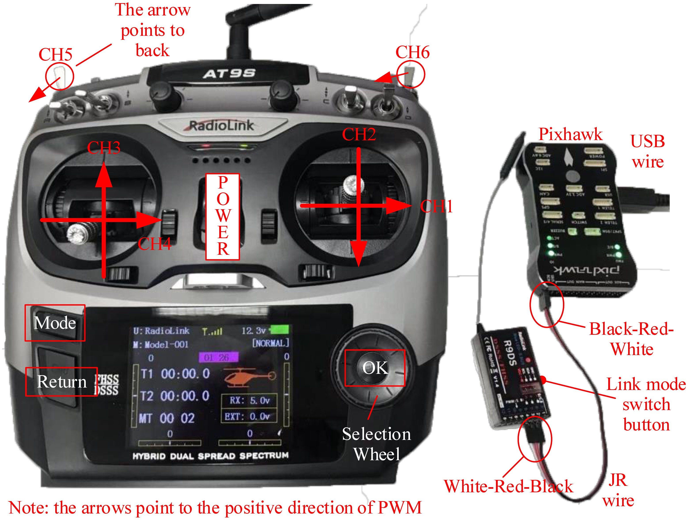
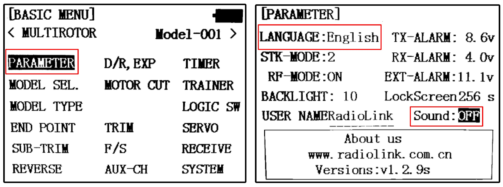
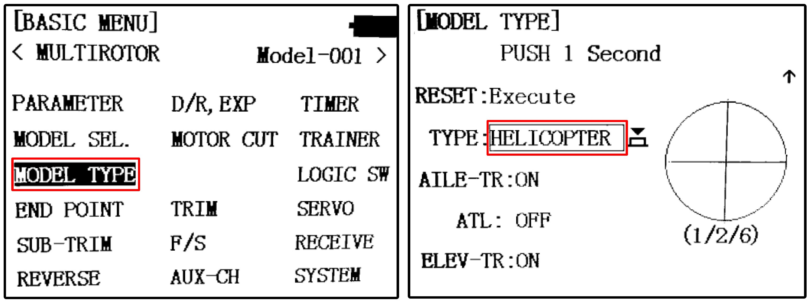

3. Hardware Platform Configuration¶
This chapter will introduce the RC system configuration, Pixhawk autopilot system configuration, airframe, and propulsion system configuration.
3.1. RC System Configuration¶
There are two RC system products presented in this book, which are RadioLink AT9S and Futaba T14SG. The receivers of these RC systems have the S.BUS output function that can transmit the PWM signals of all channels to the flight control through one data line. Radio Link AT9S is relatively inexpensive, and it is suitable for indoor experiments; Futaba T14SG is relatively expensive, but it offers better performance and reliability, which makes it more suitable for actual outdoor flight tests. RC transmitters with “Left-hand throttle (Mode 2)” configuration are selected in this book, whose left stick is the throttle lever without the auto-return function. RC transmitters with “Right-hand throttle (Mode 1)” and “Left-hand throttle” configurations have different hardware structures that cannot be modified through the software setting page; thus, readers need to pay attention to this. The following subsections detail the configuration steps of the two RC systems. Other RC systems can be configured in a similar way.
3.1.1. RadioLink AT9S Configuration Method¶
RadioLink AT9S includes an RC transmitter and an R9DS RC receiver. Other necessary accessories include a battery (LiPo lithium polymer battery, 3S, 11.1V), a battery charger, a JR line (or DuPont line) for connecting the RC receiver to the Pixhawk autopilot, and a MicroUSB cable for connecting the Pixhawk autopilot with the computer.
(1) Battery and charger instructionsThe left side of Fig. 2.14 shows the battery and the charger. The battery begins to charge when the four-port charging head of the battery is inserted into the socket on the charger. Red and green indicator colors represent the “charging” and “fully charged” status, respectively. The RC transmitter battery is installed

Fig. 2.14 RC transmitter, battery, and charger¶
(2) RC receiver initial setting1) Connect the RC receiver and the Pixhawk according to Fig. 2.15. The horizontal pin on the downside of the tail face of the receiver must be connected to the left-most RC pin on the tail face of the Pixhawk with a three-line JR line, and the Pixhawk MicroUSB port must be connected to the computer USB Type-A interface to supply power to the receiver and the Pixhawk.
Fig. 2.15 RC transmitter and receiver configuration¶
2) How to rematch the RC transmitter with an RC receiver (the connection has been completed by default, and this step needs to be performed only when problems occur in the connection of the receiver and the transmitter). Turn on the power of the RC transmitter (all other RC transmitters should be turned off), and correctly connect the receiver with the Pixhawk and the computer. Then, press the matching switch on the right side of the receiver with a pen tip or needle (see Fig. 2.15) for more than one second. At this time, the LED of the receiver starts to flash, which indicates that it is searching for the nearest RC transmitter. When the receiver LED flashes seven or eight times and then remains constant, it means that the matching process is finished and a connection has been successfully established between the RC transmitter and receiver.
3) S.BUS signal mode selection (the receiver is in this mode by default; thus, this step is typically not performed). The S.BUS mode allows the Pixhawk to transmit all channel PWM signals through one JR line. If the Pixhawk is powered up and connected to the receiver, the LED on the receiver is blue-white, which indicates that it is already in S.BUS mode and no setup is required. If the receiver LED is red, readers need to double-press (press twice within one second) the matching switch on the right side of the receiver. If the receiver LED turns blue-white, then the S.BUS mode has been successfully set.
(3) RC transmitter setting
Pull up the “POWER” switch shown in Fig. 2.15 to open the RC transmitter.
Setting the Language and Turning off the Sound
Press the “Mode” button on the RC transmitter shown in Fig. 2.15 for several seconds to enter the model setting page shown in Fig. 2.16. Roll the “Selection Wheel” on the RC transmitter shown in Fig. 2.15, move the cursor to “PARAMETER”, and press the “OK” button on the RC transmitter shown in Fig. 2.15 to enter the RC transmitter parameter setting page.
Scroll the “Selection Wheel” to select the “English” item, click the “OK” button, and then scroll the “Direction Wheel” again to select the desired display language. Then click the “OK” button to confirm the selection.
Because this experiment is mainly performed indoor, it is recommended to turn off the speakers of the RC transmitter to prevent disturbing people nearby. As shown in Fig. 2.16, modify the “Sound” option from “ON” to “OFF”.
Fig. 2.16 RC transmitter parameter setting page¶
Multicopter mode setting
Press the “Mode” button for several seconds to enter the “BASIC MENU” page, and click the “MODEL TYPE” item to enter the model type selection page shown in Fig. 2.17.
Change the “TYPE” item from “HELICOPTER” to “MULTICOPTER”, and then press the “OK” button for several seconds to set the control mode to “Multicopter”.
Fig. 2.17 Multicopter control mode switching of RC transmitter¶
Throttle channel reverse setting
The throttle channel of the RadioLink transmitter is opposite to normal RC transmitters, and the throttle channel reverse needs to be set. Press the “Mode” button for several seconds to enter the “REVERSE” setting page shown in Fig. 2.18, and change the throttle channel from “NOR” to “REV”.
CH5-CH6 mode switching channel setting
Because of experimental requirements, CH5 shown in Fig. 2.15 of the RC transmitter needs to be mapped to a three-position switch for mode switching of the Pixhawk. Press the “Mode” button for several seconds, and click the “AUX-CH” item next to the “REVERSE” item shown in Fig. 2.18.
As shown in Fig. 2.19, on the “AUX-CH” setting page, click the “CH5” item to enter the channel setting page, and map CH5 to a three-position switch “SwE” on the RC transmitter (switch “E” is located in the top-left corner of the RC transmitter in Fig. 2.15).
Similarly, the “CH6” item in Fig. 2.19 must be modified to a three-position switch “SwG” of the RC transmitter (switch “G” is located in the upperright corner of the RC transmitter in Fig. 2.15).
5）CH5∼CH6 模式切换通道设置。
（a）由于实验需求，需要将遥控器的第五通道（CH5）映射为左上角的三段开关，用于 Pixhawk 的模式切换。长按遥控器面板的“模式”按钮，单击 “REVERSE”（舵机相位）按钮旁边的“AUX-CH”（辅助通道）按钮。
图 2.18 遥控器油门通道反向设置¶
（b）在“AUX-CH”（辅助通道）设置页面，单击“CH5”（第五通道）按钮进入第五通道设置页面，将 CH5 映射为遥控器的三段开关“SwE”。
图 2.19 遥控器多旋翼控制模式切换¶
（c）同理，将 “CH6”（第六通道）对应通道由“VrA”修改为遥控器的三段开关“SwG”。
6）通道确认。
（a）重启遥控器，按下遥控器的“返回”按钮，可以出现“SERVO”（舵量显示）界面，此时拨动各个摇杆可以看到每个通道 PWM 值的变化情况。注意：通道数值到达上侧 100，对应实际输出的 PWM 值为 1100 微秒；通道数 值到达下侧 100，对应实际输出 PWM 值为 1900 微秒。例如，下图中第三通道位于上 侧 100 位置，对应 PWM 值为 1100 微秒；其他三个通道位于 0 位置，对应 PWM 值为 1500 微秒。
图 2.20 遥控器摇杆位置与方向显示页面¶
（b）弄清各个摇杆拨动方向与 PWM 值的对应关系，对正确处理遥控器指令至关重要。 依次按下文规则拨动遥控器的各个通道摇杆，确定各个通道与下文规则正确对应：
CH1：对应遥控器右手横向摇杆，摇杆从左侧拨动到右侧，对应 PWM 值为 1100∼ 1900 微秒；
CH2：对应遥控器右手竖向摇杆，摇杆从上侧拨动到下侧，对应 PWM 值为 1100∼ 1900 微秒；
CH3:对应遥控器左手竖向摇杆，摇杆从上侧拨动到下侧，对应 PWM 值为 1900∼ 1100 微秒（注意，这里和第二通道是相反的）；
CH4:对应遥控器左手横向摇杆，摇杆从左侧拨动到右侧，对应 PWM 值为 1100∼ 1900 微秒；
CH5:对应左手最上侧的三段开关，摇杆置于顶部（最远离使用者的档位）、中部和底部（最靠近使用者的档位）档位对应 PWM 值为 1100、1500 和 1900 微秒；
CH6:对应右手最上侧的三段开关，摇杆置于顶、中和底档位对应 PWM 值为1100、1500 和 1900 微秒。
3.1.2. Futaba T14SG 遥控器配置方法¶
Futaba 接收机与 Pixhawk 自驾仪的连接方式与乐迪接收机有一些区别，具体连接方式如下图所示。下面介绍 Futaba T14SG 遥控器的配置方法。
图 2.21 Pixhawk 自驾仪与 Futaba 接收机连线图¶
需要用到Futaba T14SG的六个通道有：J1 摇杆(CH1滚转通道）、J2 摇杆(CH2 俯仰通道）、J3 摇杆(CH3 油门通道）、J4 摇杆(CH4 偏航通道）、SE 三段开关(左上侧三段开关，CH5 模式通道）和 SG 三段开关(右上侧三段开关，CH6 模式通道）。
图 2.22 Futaba T14SG 遥控器¶
Futaba T14SG 遥控器的基本设置如下：
（1）双击遥控器的“链接”(LINK）按钮，进入“LINKAGE MENU”链接设置界面。选择进入“MODEL TYPE”(机型选择）页面，选择 “TYPE”为“MULTIROTOR”；
（2）回到链接设置界面，选择“FUNCTION”(功能）选项，确认通道映射，即遥控器的第一到第四通道，依次对应 J1∼J4 摇杆；
（3）回到链接设置界面，选择“REVERSE”(舵机相位）选项，确认通道的反向情况，只有第三通道(油门）为反向的；
（4）回到链接设置界面，选择“FUNCTION”(功能）选项，翻到第二页配置页，将“5 MODE”通道的“CTRL”选项设置为“SE”摇杆(遥控器左上侧摇杆）；
（5）同上一步操作，将 “6 AUX1”通道设置为“SG”摇杆(遥控器右上侧摇杆）。
经过上述设置之后，和乐迪 AT9S 一样，还需要在通道数值显示界面，确定各个摇杆对应的 PWM 值输出与本书定义相符。
图 2.23 Futaba T14SG 遥控器¶
3.2. Pixhawk 自驾仪系统配置¶
为了使 Pixhawk 自驾仪的配置满足本实验需求，需要进行一些基本的固件烧录与模式配置操作，确保自驾仪功能正常且配置正确。方法如下：
（1）打开 QGC 地面站软件。
（2）如下图(a), 单击工具栏齿轮图标进入设置页面，再单击“Firmware”标签进入固件烧录页面。
（3）用 USB 数据线连接 Pixhawk 自驾仪与计算机，此时软件会自动识别 Pixhawk 硬件，如下图(b) 所示，在界面右侧弹出固件配置窗口，勾选“PX4 Flight Stack”，然后单击“OK”按钮，QGC 开始自动下载并安装PX4官方固件到Pixhawk 自驾仪硬件中。
图 2.24 通过 QGC 地面站配置 Pixhawk 自驾仪¶
（4）完成固件烧录后，自驾仪会自动重启并连接到 QGC 上；此时，进入“Airframe”标签页，选择机架类型为“HIL Quadcopter X”，然后单击右上角的“Apply and Restart”按钮，此时自驾仪会自动重启。
图 2.25 选择机架类型为“HIL Quadcopter X”¶
（5）重启后 QGC 地面站会自动寻找串口并连接到Pixhawk 自驾仪，此时查看各个配置页，确保 Pixhawk 自驾仪进入硬件在环仿真模式。
3.3. 机架和动力系统配置¶
本实验提供的软件在环和硬件在环仿真模型是一个轴距(对侧电机轴心距离）为 450mm 的小型四旋翼，重量为 1.4kg。为了顺利进行后续的飞行实验，需要确保多旋翼飞行器的配置与提供模型尽量接近。本书实验选择目前最受欢迎的 F450 多旋翼飞行器配置，读者可以自行购买零件组装，或者直接购买整机。F450具体组成如下：
（1）机架：DJI 风火轮 F450 机架。
机架重量(机身 + 机臂+ 起落架）：282g;
保护架重量：4×32g;
轴距：450 mm ;
起飞重量：800∼1600g;
推荐螺旋桨：8∼10 英寸。
（2）动力系统：DJI E310 动力套装(电机、电调、螺旋桨套装）。
电机尺寸：23×12mm，KV 值：960RPM/V ，重量：60g;
螺旋桨尺寸：24×12.7cm(9.4x5.0 英寸），重量：13g;
电调尺寸：74×32×10mm，最大持续电流：20A，重量：43g。
（3）电池：格氏 LiPo 电池。
容量：4000mAh;
电压：3S(11.1V);
放电倍率：25C;
重量：300g。
（4）自驾仪：Pixhawk 自驾仪套装。
Pixhawk 1 自驾仪(2M 闪存版），编译命令为px4fmu-v3_default:尺寸：81×47×16mm，重量：36g;
GPS 模块：型号：UBlox NEO-M8N GPS，模块重量：14g，重量：24g;
其他配件：电源模块、蜂鸣器、安全开关、连接线和减震器共 60g。
图 2.26 F450 零件图与组装后的示意图¶
完成组装后，可以按照 PX4 官方网站的教程 进行初步的飞行测试，确保各项功能正常。